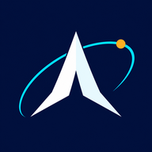

DiversaMente
A revista e o projeto de neurodiversidade já elaborados, reunidos no repositório Neurodiversidade Brasil.
Abrir conteúdos e repositório ↗Ver ficha no ecossistema
AldenirMed89PROJETO 360X · CONHECIMENTO EM REDENEURODIVERSIDADE & APRENDIZAGEM ACESSÍVEL
Neurodiversidade e TDAH têm um lugar próprio no AldenirMed89. Encontre os projetos relacionados, consulte o acervo já elaborado e escolha por onde continuar.
O acesso principal abre o repositório público e seus conteúdos. Esta página não solicita cadastro, laudo ou dados pessoais.
Caminhos diferentes.
Um espaço de encontro.
PROJETOS CONECTADOS · SEM DUPLICAR O ACERVO
A revista e o projeto de neurodiversidade já elaborados, reunidos no repositório Neurodiversidade Brasil.
Abrir conteúdos e repositório ↗Ver ficha no ecossistemaCritérios de clareza, navegação e esforço cognitivo para examinar materiais e interfaces. Conheça a proposta e seus limites.
Conhecer o método →O selo editorial não certifica eficácia de tratamentos.
Frente de estudo, planejamento e retomada do projeto. Consulte a documentação e o estado de desenvolvimento.
Explorar a iniciativa →Uma proposta de apoio à organização, com estado próprio no catálogo.
Na conferência de 29/10/2026, o endereço de publicação citado no projeto retornou HTTP 404 e o GitHub Pages do repositório estava inativo. O repositório público continua acessível pelo botão principal.
Consultar o endereço externo informado no projeto ↗Disponibilidade externa registrada nesta data; não há monitoramento automático. A integração no AldenirMed89 não afirma que o portal externo já esteja publicado.
Esta seção apresenta iniciativas e organiza seus acessos. Os conteúdos vinculados conservam suas fontes, datas e estados de revisão. Decisões de saúde exigem avaliação individual.
← Voltar ao AldenirMed89